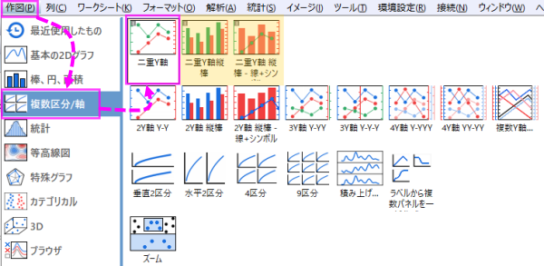
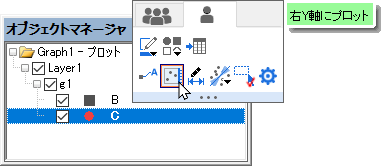
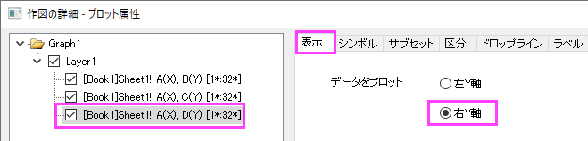

FAQ-194 2Y軸グラフはどのように作成するのでしょうか?
Create-Double-Y
Last Update: 12/7/2022
ワークシートから二重Y軸のグラフを作成
- ワークシートからプロットしたい複数のY列を選択します。X列がある場合は属性をXとして設定されているか確認してください。
- 作図> 複数区分/軸：二重Y軸を選択します。
- 必要に応じてプロットタイプを変更する場合、各レイヤをアクティブにして、折れ線、散布図、線+シンボル、縦棒グラフボタンをクリックして変更できます。
Note：1列1行の二重Y軸の縦棒と折れ線、あるいは、二重Y軸の縦棒グラフを作図メニューから直接プロットできます。
- 
 | Origin 2023以降では、1つのレイヤで二重Y軸グラフを作成でき、オブジェクトマネージャーを使用して、1つの軸のプロットを二重Y軸グラフに簡単に変換できます。
- オブジェクトマネージャのプロットアイコンをクリックします。
- 表示されたミニツールバーの右Y軸にプロットをクリックします。これにより、グラフに右Yスケールが追加され、強調表示されたデータがその軸スケールに対してプロットされます。
- 
- または、(a) プロットアイコンを右クリックし、ショートカットメニューから右Y軸にプロット を選択します。または、(b) 作図の詳細ダイアログを開き、左側のパネルで目的のプロットを選択してから、右側の表示タブで右Y軸ラジオ ボタンを設定します。
|
既存のグラフの右Y軸に新しいデータを追加する方法
- まず、現在のグラフレイヤに新しいデータを追加します。次の3つの方法があります。
- ワークシートウィンドウを開き、2番目のデータセットを選択します。グラフウィンドウに戻って、挿入：レイヤにプロットを追加: プロット形式を選択します。
- あるいは、データを選択してワークシートからドラッグしてグラフレイヤにドロップすることもできます。
- あるいは、グラフの左上隅にあるレイヤ1のレイヤアイコンをダブルクリックしても可能です。 レイヤ内容のダイアログを使って、レイヤにデータを追加したり、削除できます。
- 追加したプロットをダブルクリックして、作図の詳細ダイアログを開きます。左パネルで、追加したプロットが選択されている状態で、表示タブを開き、データをプロットするを右Y軸に設定してOKをクリックしてダイアログを閉じます。右Y軸が表示され、再スケールされて第2プロットのデータ範囲に調整されます。
- 
- プロットのスタイルを編集したい場合は、ミニツールバーを使用できます。
| 上述の操作は、同じレイヤに二重Y軸グラフを作成する操作です。ほかに、2つのレイヤを持つ2Y軸 Y-Yグラフも作図メニューから直接作図できます。
|
キーワード:第二, 二, 二重Y, 複数X, 軸にリンク